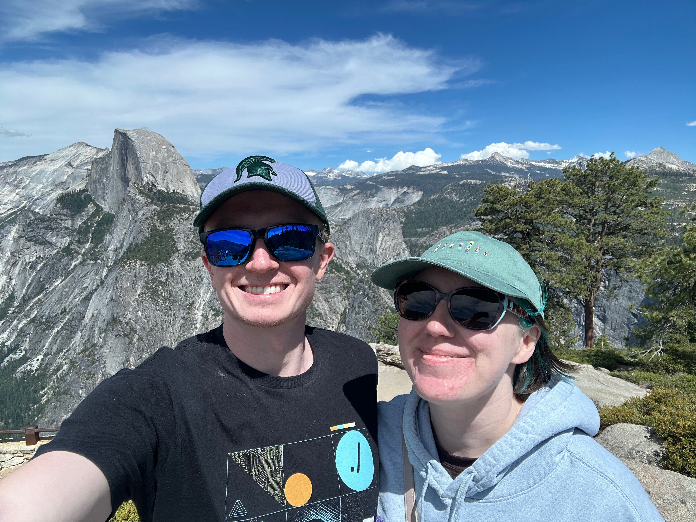
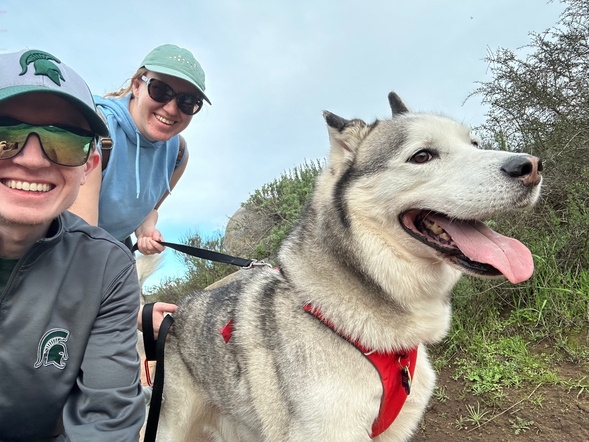
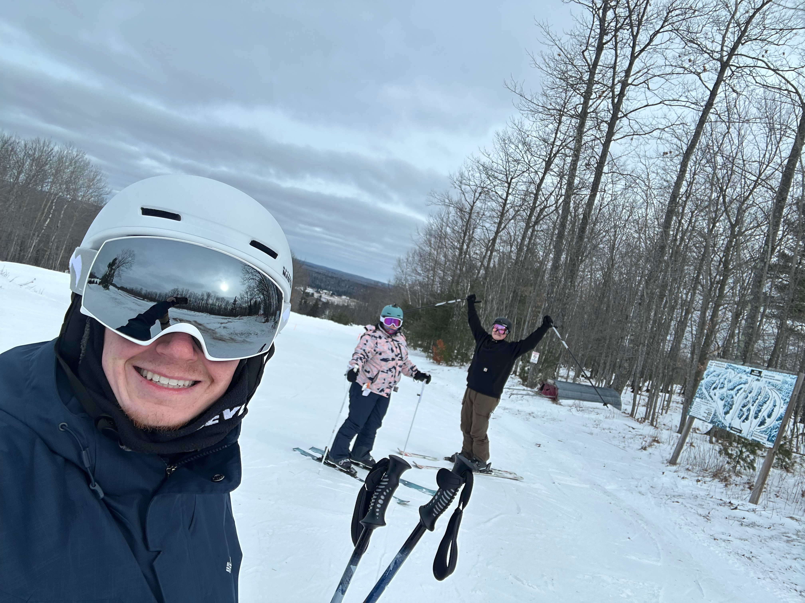

About
About Me
I’m Ben Frisanco, a DFIR Analyst and Threat Investigator focused on incident response, threat hunting, and forensic analysis. My work centers on understanding suspicious activity, validating malicious behavior, and helping turn investigative findings into clear, actionable outcomes.
Professional Background
I’ve worked across enterprise security operations, incident response, and investigative analysis, with experience spanning endpoint, network, SIEM, and API-focused threat environments. I've supported and led incident response investigations across small and enterprise-level environments, handling detection, triage, containment, and remediation while also analyzing OWASP API Top 10 attack techniques and their operational impact.
I've also worked as a Security Operations Center Analyst where I conducted investigations across hybrid IT/OT environments, designed SIEM detections aligned to MITRE ATT&CK, and supported phishing and social engineering investigations. That mix of enterprise monitoring, investigative rigor, and detection engineering shaped how I approach defensive work today.
How I Work
My approach is evidence-driven and operationally practical. I’m most interested in the point where analysis becomes decision-making: identifying what happened, determining whether activity is malicious, understanding scope and impact, and documenting findings clearly enough that they can support response actions. I care deeply about repeatable workflows, strong triage discipline, and reducing analyst friction where automation can help.
In previous roles, I built Python and MySQL-based automation to accelerate incident response, forensic enrichment, and investigative reporting, reducing manual analyst effort and improving reporting efficiency. That experience reinforced my interest in building systems and processes that make defenders faster without sacrificing analytical quality.
Technical Focus
- Incident Response and Digital Forensics
- Threat Hunting and Investigative Triage
- Malware Analysis and Memory Forensics
- Detection Engineering and SIEM Use Case Development
- Endpoint, Network, and Log Analysis
- Python, SQL, Bash, and PowerShell for workflow automation
Lab Work and Independent Development
Outside of formal roles, I continue to build hands-on DFIR and malware analysis skills through independent lab work. That includes simulated incident response investigations across endpoint and memory artifacts, malware analysis focused on persistence and lateral movement, and maintaining a dedicated malware research and threat intelligence home lab. I also built DFIR lab environments during a career break and achieved a Top 2% global ranking on TryHackMe’s Cyber Defense and Blue Team learning paths.
Why This Site Exists
This site is where I publish technical writing, document investigative approaches, and share work related to digital forensics, incident response, and threat analysis. My goal is to create material that is practical, technically sound, and useful to other defenders. I want the site to reflect the way I work: structured, analytical, and focused on real-world security problems.
Credentials
I hold a Bachelor of Science in Computer Science with an Information Technology minor from Michigan State University, along with certifications including Cisco CCNA, Cisco CCNA Cybersecurity, AWS Cloud Practitioner, and Azure Fundamentals. I currently hold a Top 2% global ranking on TryHackMe’s Cyber Defense and Blue Team learning paths, reflecting my commitment to continuous learning and hands-on skill development in the field of cybersecurity.
Outside of Work
Outside of cybersecurity, I spend a lot of time outdoors, especially hiking, skiing, and exploring new places. It’s a way for me to reset, stay curious, and maintain the same mindset I bring to investigations: the importance of staying grounded and present, paying attention to detail, and understanding the environment around me.


